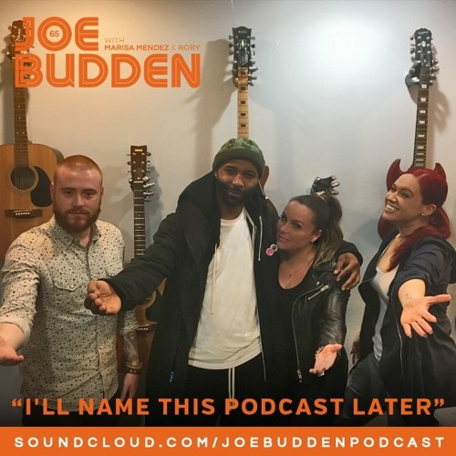
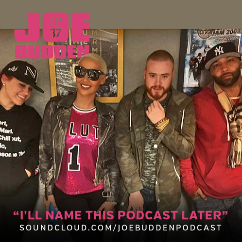
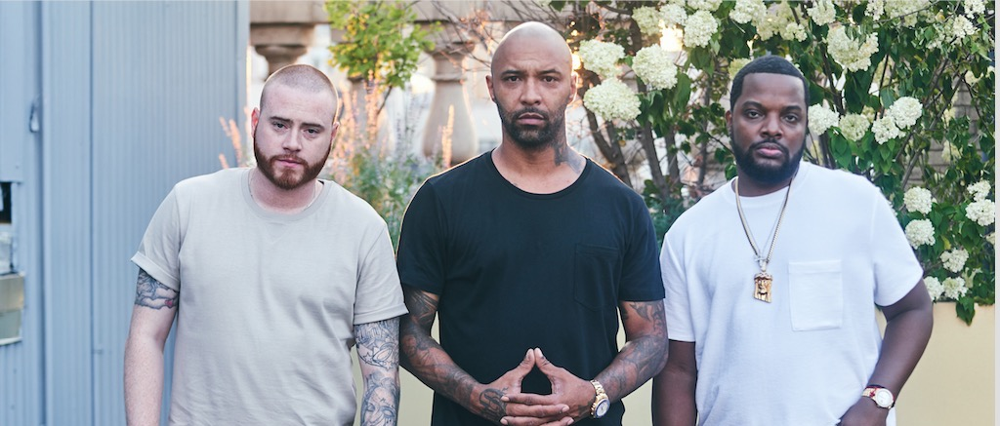
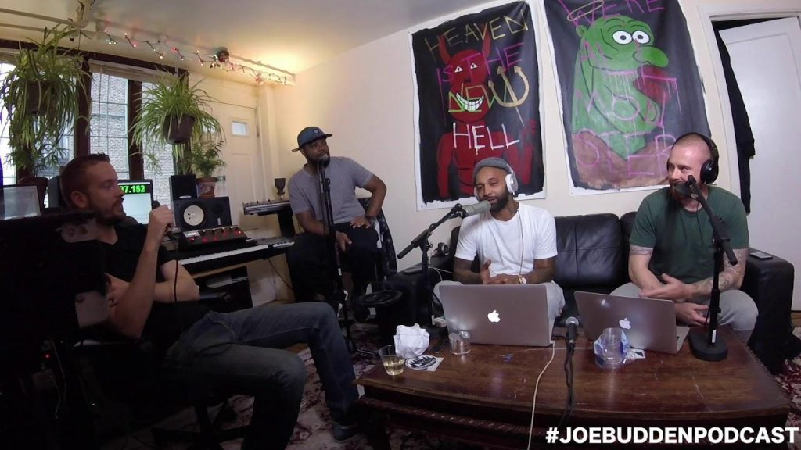
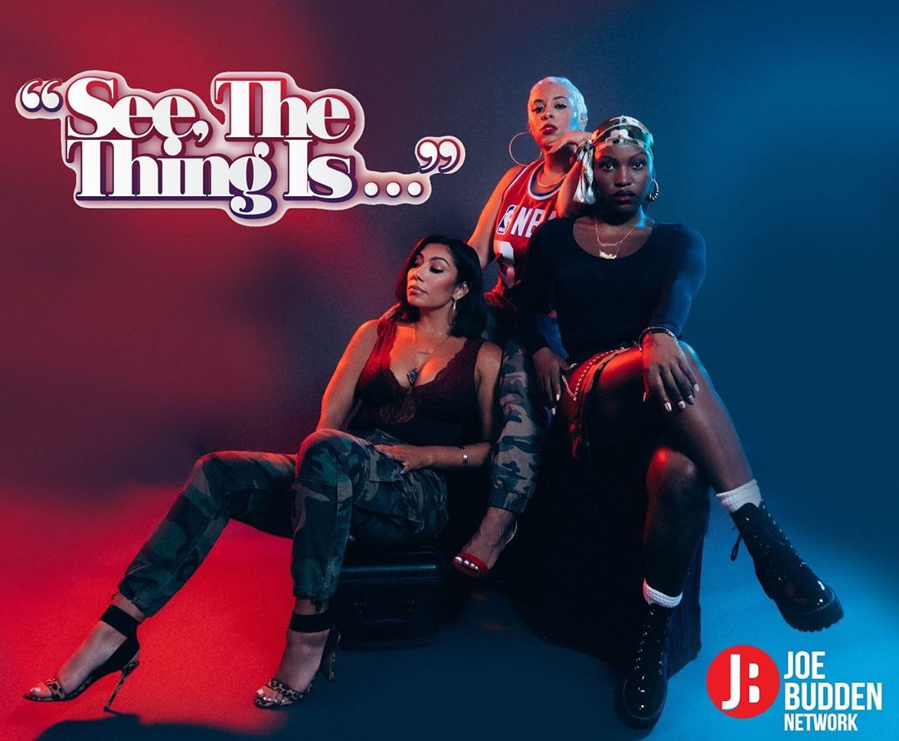
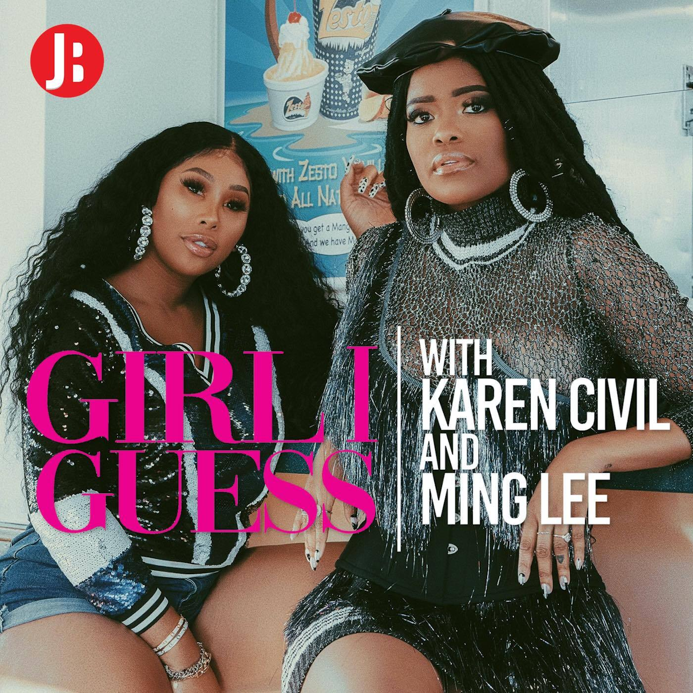
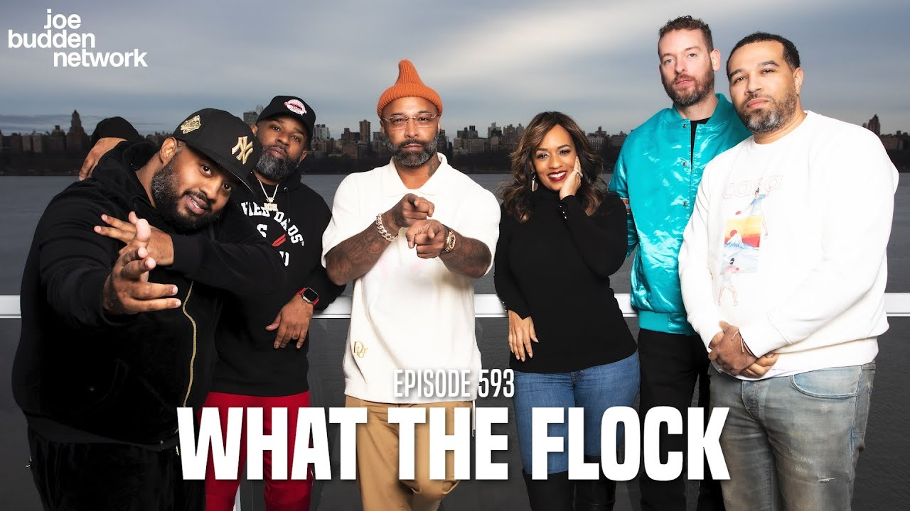
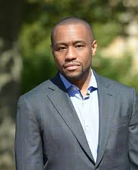
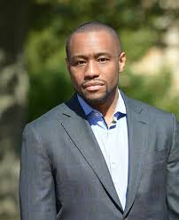

The Joe Budden Podcast (formerly I'll Name This Podcast Later). Is a talk and music podcast released twice a week and is currently hosted by Joe Budden, Parks Vallely, Lamar "Ice" Burney, Antwan "Ish" Marby, Melyssa Ford, and Trevor "Queenzflip" Robinson. The show covers numerous topics ranging from music to sports, but primarily focuses on hip-hop/R&B and the events pertaining to it from the previous week
History
The show began in early 2015 as I'll Name This Podcast Later, originally hosted by former rapper Joe Budden, Rory Farrell and Marisa Mendez. The content of the podcast was described as "life, music, sex, and more". The first episode was released audio only on February 18, 2015, at a runtime of 1 hour. For the first year of its existence, the show followed this format, releasing episodes at an average run time of 60–75 mins and audio only.


After episode 76 in July 2016, Mendez left the show, siding with Drake during his real life feud with Budden, and was subsequently replaced with Jamil "Mal" Clay for episode 77

With the release of episode 92 on December 14, 2016, the show switched to a new video format set in Budden's home studio. Shortly after this, the show's run time switched from an average of 60–70 mins to 90–120 mins, which varied from week to week. After the studio began undergoing renovations, the location for filming was moved to the living room of audio engineer Parks Vallely for episode 126 in August 2017. The move to Vallely's house marked his first appearances on the show; he would go on to become a formal host of podcast.

In August 2018, Budden signed a deal to bring his podcast to Spotify while still uploading a video version to YouTube, and expand the show to a twice-weekly schedule, with new episodes every Wednesday and Saturday.
In September 2020, the exclusive contract with Spotify came to an end after failed negotiations between the show and the digital streaming provider.
In October 2020, Budden revealed that the podcast would be part of his new online media network, The Joe Budden Network. In addition, he announced that the show had signed a new deal to be sponsored by Cash App. The first podcast launched on The Joe Budden Network was the See The Thing Is... podcast hosted by Bridget Kelly, Olivia Dope and Mandii B in October 2020. Since November 2020, the network and the podcast itself are being distributed by multiple platforms, primarily YouTube, SoundCloud, iTunes and Google Podcasts. In January 2021, Karen Civil and Ming Lee joined the network, launching the Girl I Guess podcast.


In May 2021, Rory and Mal both left the podcast after 5 years as co-hosts, in the wake of Rory being fired by Budden.
Later in May 2021, two of Budden's long-time friends, Antwan "Ish" Marby and Lamar "Ice" Burney joined the podcast as co-hosts.
In December 2022, media personality and former video vixen Melyssa Ford and social media entertainer Trevor "Queenzflip" Robinson also joined the podcast as co-hosts.

In 2024 Joe decided to add recurring Host to the podcast and brought in Emanny Salgato & Mark Lamont Hill on the podcast.
 
